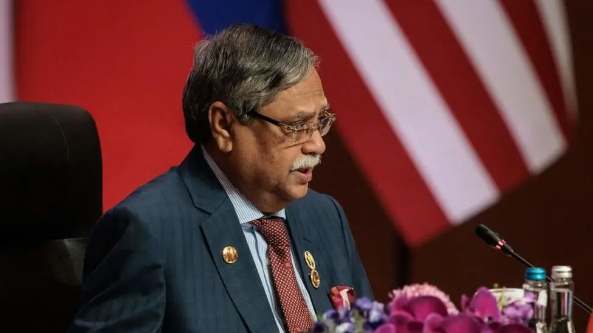
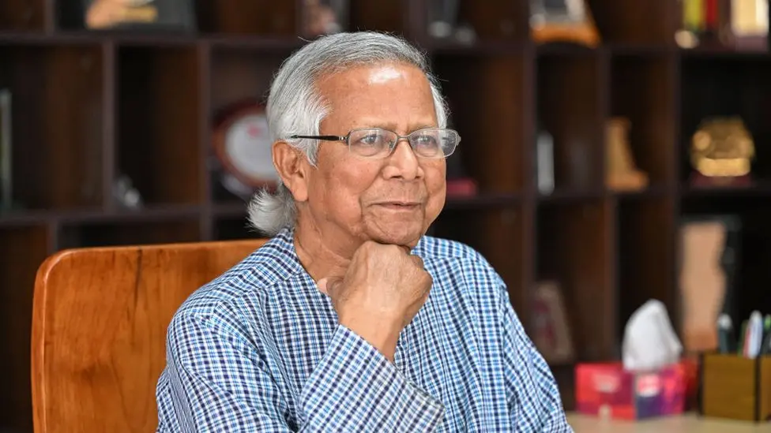

President: Mohammed Shahabuddin

Mohammed Shahabuddin was elected unopposed in the 2023 presidential election. He was nominated by the ruling Awami League. Before being elected to the largely ceremonial post, he had served as a judge and as a commissioner of the Anti-Corruption Commission.
Back to Top
Prime minister: Muhammad Yunus

Nobel laureate Muhammad Yunus was sworn in as Bangladesh's interim prime minster in August 2024 after Sheikh Hasina - the woman who ruled Bangladesh with an iron fist for 15 years - fled across the border to India.
Prof Yunus took an oath at the presidential palace in Dhaka along with more than a dozen members of his new cabinet, vowing to perform his duties "sincerely" and to "uphold, support and protect the constitution".
Ms Hasina resigned as prime minister after weeks of student-led protests - which left hundreds dead - escalated and culminated in calls for her to stand down.
The decision to name Prof Yunus as chief adviser of the interim government followed a meeting between President Mohammed Shahabuddin, military leaders and student leaders.
The students had been clear they would not accept a military-led government, but wanted Prof Yunus to lead.
The hope is Prof Yunus, the so-called banker for the poor, will bring democracy back to Bangladesh after years of autocratic rule.
What finally tipped the scales for Ms Hasina was the ferocity of the clashes between the protesters and police.
Her decision to flee was also hastened by the military, which would have put pressure on her to step down. The army, which has ruled Bangladesh in the past and is still hugely respected, has an outsized influence over the country's politics.
Reform is key, according to Prof Yunus. It was a simple demand for reform of a quota system which reserved some public sector jobs for the relatives of war heroes, who fought for the country's independence from Pakistan in 1971, that sparked the protest movement in the first place.
Back to Top
Media
The decision to name Prof Yunus as chief adviser of the interim government followed a meeting between President Mohammed Shahabuddin, military leaders and student leaders.
The students had been clear they would not accept a military-led government, but wanted Prof Yunus to lead.
The hope is Prof Yunus, the so-called banker for the poor, will bring democracy back to Bangladesh after years of autocratic rule.
What finally tipped the scales for Ms Hasina was the ferocity of the clashes between the protesters and police.
Her decision to flee was also hastened by the military, which would have put pressure on her to step down. The army, which has ruled Bangladesh in the past and is still hugely respected, has an outsized influence over the country's politics.
Reform is key, according to Prof Yunus. It was a simple demand for reform of a quota system which reserved some public sector jobs for the relatives of war heroes, who fought for the country's independence from Pakistan in 1971, that sparked the protest movement in the first place.
Back to Top